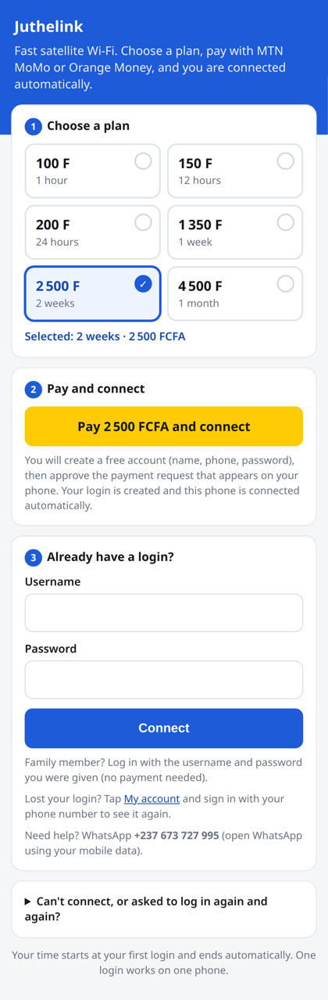
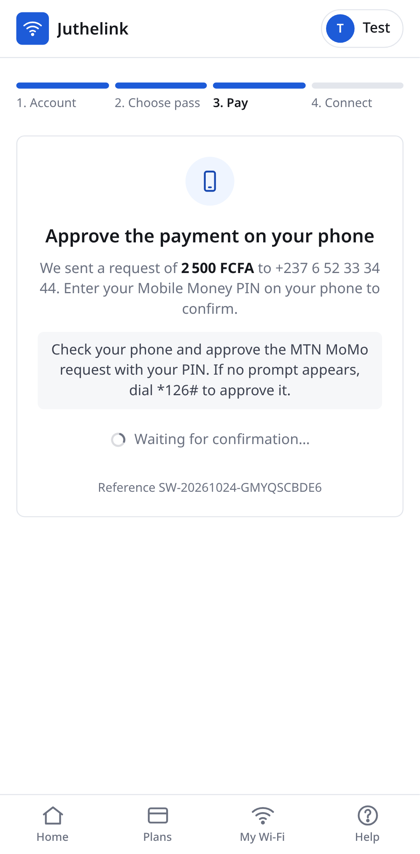
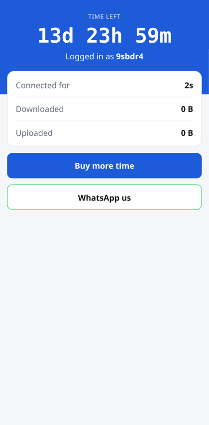

A complete, first-time, click-by-click walkthrough. At the end, customers connect to “Starling Wi-Fi”, see your login page, type the username and password you sold them, and are disconnected automatically when their time is up.
What you are building, what you need, and three rules that keep you safe.
The MikroTik sits in the middle. Internet comes in on port 1. Everything plugged into ports 2, 3, 4 (and its own Wi-Fi) is the customer side: anyone there must log in on your page before they get internet.
Looking at the back of the hAP lite. Port 1 is the one next to the power socket, marked “Internet”. Keep it like this for the whole guide.
Juthelink-Router-Kit.zip (unzip it on your PC): starling-profiles.rsc, juthelink-sync.rsc, ticket-maker.html, and the hotspot folder with login.html, alogin.html, status.html.bridge-hotspot, type exactly that.| What | Value |
|---|---|
| Router MAC address (Winbox) | |
| Router admin password (Part 3) | |
| Wi-Fi name (SSID) | Starling Wi-Fi |
| Hotspot admin test user / password (Part 8) | |
| Your WhatsApp / MoMo number (Part 12) | |
| Tenda admin password (Part 14) |
Five things you will use in every step.
admin, Password: empty (or the password you set in Part 3) → Connect.Your router is almost empty already (it showed a bridge1). We erase everything so it is in a known state.
/system reset-configuration no-defaults=yes skip-backup=yes(In the terminal, type
y and Enter when it asks “Dangerous! Reset anyway?”)admin, empty password → Connect. If it asks about the default configuration, click Remove Configuration (or OK)./password old-password="" new-password="YourStrongPassword" confirm-new-password="YourStrongPassword"
starling-hotspot → OK.
/system identity set name=starling-hotspot
Africa/Douala → OK. Then System → SNTP Client → tick Enabled → Primary NTP Server 162.159.200.1, Secondary 162.159.200.123 → OK.
/system clock set time-zone-name=Africa/Douala /system ntp client set enabled=yes primary-ntp=162.159.200.1 secondary-ntp=162.159.200.123The clock matters: customers' time is counted with it. It will show the right time once the internet works (Part 4).
admin and your new password.The router asks the Starlink router for an address on port 1, exactly like a phone does.
ether1 → Use Peer DNS: unticked → Add Default Route: yes → OK.
/ip dhcp-client add interface=ether1 use-peer-dns=no add-default-route=yes disabled=no comment="Internet from Starlink"
1.1.1.1 and (click the small arrow to add a line) 8.8.8.8 → tick Allow Remote Requests → OK.
/ip dns set servers=1.1.1.1,8.8.8.8 allow-remote-requests=yes
/ping google.com count=4
Always update before configuring the hotspot, so an update does not change your settings later. Your router has 6.48.6; we move to the latest 6.49 “long-term” version.
/system package update set channel=long-term /system package update check-for-updates /system package update install
/system routerboard upgrade /system reboot
A “bridge” joins ports 2, 3, 4 and the Wi-Fi into one customer network. Port 1 (internet) must NOT be in it.
bridge-hotspot → OK.
/interface bridge add name=bridge-hotspot comment="Customers"
ether2, Bridge bridge-hotspot → OK. Repeat for ether3, ether4 and wlan1.
/interface bridge port add bridge=bridge-hotspot interface=ether2 /interface bridge port add bridge=bridge-hotspot interface=ether3 /interface bridge port add bridge=bridge-hotspot interface=ether4 /interface bridge port add bridge=bridge-hotspot interface=wlan1
10.5.50.1/24 → Interface bridge-hotspot → OK.
/ip address add address=10.5.50.1/24 interface=bridge-hotspot comment="Customer gateway"
The hAP lite has a small indoor Wi-Fi. We turn it on so you can test everything before mounting the Tenda. You can keep it on afterwards as a second, indoor access point.
/interface wireless security-profiles set [find default=yes] mode=none
Starling Wi-Fi, Security Profile default → OK. Then select wlan1 and click the blue tick ✓ Enable.
/interface wireless set wlan1 mode=ap-bridge band=2ghz-b/g/n channel-width=20mhz frequency=auto ssid="Starling Wi-Fi" security-profile=default wireless-protocol=802.11 disabled=no
The Hotspot Setup wizard creates the login system, gives addresses to customers, and shares the internet. This is the same wizard as in the video.
| The wizard asks | You answer |
|---|---|
| HotSpot Interface | bridge-hotspot |
| Local Address of Network | 10.5.50.1/24 (Masquerade Network: ticked) |
| Address Pool of Network | 10.5.50.10-10.5.50.250 |
| Select Certificate | none |
| IP Address of SMTP Server | 0.0.0.0 |
| DNS Servers | 1.1.1.1 and 8.8.8.8 |
| DNS Name | login.starling |
| Name of Local HotSpot User | admin + a password you choose (for your own tests; write it in Part 0) |
login.starling is the address customers see at the top of the login page. It is not a real website; the router answers it itself./ip firewall filter disable [find action=fasttrack-connection]
http://neverssl.com.admin and the hotspot password from step 1: you can browse./interface bridge port remove [find interface=wlan1] /interface bridge port add bridge=bridge-hotspot interface=wlan1 /ip dhcp-server network remove [find] /ip dhcp-server network add address=10.5.50.0/24 gateway=10.5.50.1 dns-server=10.5.50.1 /ip dhcp-server enable [find]
http://login.starling in the browser. Still nothing: check IP → Hotspot → Servers: hotspot1 must not be red (disabled). Check IP → DHCP Server → Leases: your phone must have a 10.5.50.x address.Your PC on port 4 is now on the customer network, so its browser would also need to log in. You can let your own devices through without a ticket.
Owner PC → OK. Repeat for your own phone.
/ip hotspot ip-binding add mac-address=AA:BB:CC:DD:EE:FF type=bypassed comment="Owner PC"(Replace AA:BB:CC:DD:EE:FF with the real MAC.)
The settings the video recommends: one address per phone, and the login methods.
1 → OK.
/ip hotspot set [find] addresses-per-mac=1
/ip hotspot profile set hsprof1 login-by=http-chap,http-pap,mac-cookie,cookie
| Setting | Why |
|---|---|
| Addresses per MAC = 1 | Each phone gets exactly one address. |
| HTTP PAP | Needed by your Starling login page (Part 12) and later the website's Connect button. |
| MAC Cookie | A phone that already logged in is let back in automatically after it reconnects, without typing again (until its time ends). |
A “user profile” is a package: how long it lasts, how fast it is, how many phones can use it. Your six packages are ready in a file, including a small script that starts the clock at the customer's first login and removes them automatically when the time is up.
| Profile | Length | Price | Phones | Speed (up/down) |
|---|---|---|---|---|
| 1hour | 1 hour | 100 FCFA | 1 | 2 / 5 Mbit/s |
| 12hours | 12 hours | 150 FCFA | 1 | 2 / 5 Mbit/s |
| 24hours | 24 hours | 200 FCFA | 1 | 2 / 5 Mbit/s |
| 1week | 7 days | 1 350 FCFA | 1 | 2 / 5 Mbit/s |
| 2weeks | 14 days | 2 500 FCFA | 1 | 2 / 5 Mbit/s |
| 1month | 30 days | 4 500 FCFA | 2 | 2 / 5 Mbit/s |
| family | never expires | free | 2 | 5 / 10 Mbit/s |
starling-profiles.rsc from your PC into the Files window (or click Upload and choose it)./import file-name=starling-profiles.rsc
| Setting | Value and meaning |
|---|---|
| Shared Users | 1: one phone at a time per username (2 for 1month). |
| Rate Limit | 2M/5M: 2 Mbit/s upload, 5 Mbit/s download per customer, so one person downloading a film does not slow everyone. |
| Idle Timeout | none: a customer is not logged out just for being idle. |
| Keepalive Timeout | 3h: if a phone switches Wi-Fi off, it keeps its place for 3 hours, so the same username cannot be passed to a friend's phone. |
| Status Autorefresh | 1m: the “time left” page refreshes every minute. |
| Scripts → On Login | At the first login: creates a timer (in System → Scheduler, named exp-username) and writes the start and end time in the user's Comment. When the timer ends: disconnects the phone and deletes the user. |
3M/8M) → OK. To change a duration, edit the number after interval= in the profile's Scripts → On Login box (e.g. 1h, 2d, 7d).Two things go on the router: the three Juthelink pages (what customers see) and one small script that collects the logins customers buy on the website, every 10 seconds. Together they use about 15 KB.
login.html, alogin.html and status.html from the kit's hotspot folder onto the hotspot folder (or open the folder and click Upload). Replace the old files when asked.juthelink-sync.rsc into the Files window at the top level (not into the hotspot folder). Then open New Terminal and type:
/import file-name=juthelink-sync.rsc
/ip hotspot profile set [find] login-by=http-chap,http-pap,cookie,mac-cookie(The Juthelink page works with either; having both on avoids surprises.)
/ping google.com count=3) and the clock is right (Part 3).


Customers pay with MTN MoMo or Orange Money through Campay. The website checks the payment with Campay itself, creates the login, and the router picks it up within about 10 seconds. The phone is then logged in automatically. You do nothing.
| # | What the customer does / sees |
|---|---|
| 1 | Joins the Wi-Fi. The Juthelink page opens. Taps a plan: it gets a ✓ and “Selected: …”. |
| 2 | Taps Pay … FCFA and connect. The Juthelink website opens (allowed before login). |
| 3 | First time: creates a free account (name, phone, password). Next time: signs in. |
| 4 | Taps Pay. A MoMo / Orange Money prompt appears on their phone; they enter their PIN. (No prompt? Dial *126# for MTN or #150*50# for Orange to approve.) |
| 5 | “Payment confirmed”. A few seconds later the phone goes back to the Juthelink page, the username and password are filled in automatically and it connects by itself. |
| 6 | “You are connected”, then the Time left page counting down. When the time is up the router disconnects them and deletes the login. |
The website makes a random username (6 letters/numbers, e.g. k7m4qx) and a 6-digit password for each purchase. The router adds it with the right package and puts the customer's phone number in the comment. At the first login the router adds the start and end time to that comment. You can see every login in IP → Hotspot → Users.
On the Juthelink page: Lost your login? → My account, sign in with their phone number and password: the login is shown again with a Connect button. Forgot their password too? They tap “Forgot password” and use their Wi-Fi username or a code you give them from the admin site.
In your Campay account (campay.net → your app starling → Money balance / Transactions). Every Juthelink payment has a reference like SW-20261024-XXXXXXXX that you also see in the admin site under Payments. Withdraw from Campay to your MoMo as usual.
For family members who contributed to buying the Starlink: open ticket-maker.html → Plan: Family member (free) → type their name (and phone) → Make ticket → paste the command into Winbox New Terminal → send them the message. Example:
/ip hotspot user add name=marie766 password=261043 profile=family comment="FAMILY: Marie Ngono, 677123456"
FAMILY lists them all.Someone pays you in cash? Use ticket-maker.html (works offline on your PC): choose the plan, Make ticket, paste the command into Winbox, give them the username and password. For tickets to sell later, leave the phone empty and choose e.g. 20 → Print. Each ticket's time starts at its first login.
The Tenda must only broadcast the Wi-Fi (“AP mode”). The MikroTik does everything else. If the Tenda acts as a router, all customers look like one phone and the hotspot cannot tell them apart.
192.168.2.1, user admin, password admin). On Windows: Settings → Network → Ethernet → IP assignment → Edit → Manual, IPv4 on, IP address 192.168.2.100, Subnet mask 255.255.255.0, Gateway empty → Save.http://192.168.2.1 (or the address on the label) → log in. Set a new admin password if asked (write it in Part 0).Starling Wi-Fi (exactly the same as the MikroTik), Security None / Open, Country Cameroon (if listed), Channel 1, 6 or 11 (choose a different one from the hAP lite if you keep both), Channel width 20 MHz. If there is Client Isolation / AP Isolation, turn it on.10.5.50.2, Subnet mask 255.255.255.0, Gateway 10.5.50.1, DNS 10.5.50.1. DHCP server: OFF (if the option exists). Save. The Tenda reboots; your browser loses it. That is expected.The injector also plugs into the power socket. Never plug the PoE port into the MikroTik or your PC.
/ping 10.5.50.2 count=4
http://10.5.50.2 opens the Tenda settings.http://neverssl.com.Tick every line. Use a phone that is not bypassed (Part 9), with private Wi-Fi address turned off.
| ✓ | Test | Expected |
|---|---|---|
| ☐ | Winbox → New Terminal → /ping google.com count=4 | 4 replies |
| ☐ | Phone joins Starling Wi-Fi near the Tenda | Connected, no password asked |
| ☐ | Open http://neverssl.com | Blue Juthelink login page |
| ☐ | Log in with a wrong password | Red message “invalid username or password” |
| ☐ | Log in with test001 / 123456 (1hour) | “You are connected”, then Time left page |
| ☐ | Open YouTube / WhatsApp | Works |
| ☐ | A second phone tries the same username at the same time | Refused (“no more sessions are allowed”) |
| ☐ | Turn Wi-Fi off and on again on the first phone | Back online without typing (MAC cookie) |
| ☐ | Winbox IP → Hotspot → Users | test001 Comment shows Started … | ends … |
| ☐ | Wait 1 hour (or test with a 10m profile) | Phone disconnected, login page appears again, test001 deleted |
| ☐ | Buy the cheapest plan with your own MoMo number on a phone that is not bypassed (Part 13) | Prompt on the phone → “Payment confirmed” → the page fills the login and connects by itself → Time left counting down |
| ☐ | Unplug the router power, plug back in | After 1 minute everything works again |
test10min, Shared Users 1 → Scripts tab → paste the On Login script from on-login-script.txt and change DURATION to 10m → OK. Create a user with this profile and log in. Delete the profile after the test.starling-working → Backup. Then drag starling-working.backup from the Files window to your PC. Also in the terminal:
/export file=starling-workingand copy starling-working.rsc to your PC too (it is a readable text copy of all settings).
| I want to… | Where in Winbox |
|---|---|
| Sell a pass | Nothing to do: customers pay with Campay on the login page and are connected automatically (Part 13). Cash customer: ticket-maker.html. |
| See payments and money | Campay account → app starling → Transactions; the admin site → Payments. |
| Give a family member free access | ticket-maker.html → Family member (free) → name → paste the command (Part 13). |
| See all family logins | IP → Hotspot → Users → Find → FAMILY. |
| Find a customer's login (lost login) | The customer: Juthelink page → My account. You: IP → Hotspot → Users → Find → their phone number. |
| Check automatic logins are working | System → Scheduler → juthelink-sync Run Count goes up every 10 s; Log has no “website not reachable”. |
| See who is online now | IP → Hotspot → Active (user, address, uptime, data). |
| See when a customer's time ends | IP → Hotspot → Users → Comment column (“Started … | ends …”), or System → Scheduler → exp-username → Next Run. |
| Disconnect a phone (e.g. customer changed phone) | IP → Hotspot → Active → select the line → − (Remove). The customer can log in again on the new phone; their time keeps running. |
| Stop a customer completely | IP → Hotspot → Users → select → ✗ Disable, then remove them from Active. |
| Give someone free internet (staff) | IP → Hotspot → IP Bindings → +, their MAC, type bypassed. |
| Change prices on the login page | Edit login.html on your PC and upload it again into the hotspot folder (Part 12). |
| Check the router is healthy | Bottom bar of Winbox: CPU % and memory. CPU often above 70 % when busy means it is time for a bigger router. |
| Problem | Fix |
|---|---|
| Winbox cannot find the router | Use the MAC address. Replug the yellow cable. Try another port. Last resort: hardware reset (unplug power, hold reset, plug power, keep holding about 5 s until the light flashes, release), then start again at Part 2. |
| DHCP Client on ether1 not “bound” | Blue cable in port 1? Starlink app Online? Restart the Starlink router. |
| Customers get internet without logging in | FastTrack rule active (Part 8 step 2), or the device is bypassed (Part 9), or the hotspot server hotspot1 is disabled. |
| Grey MikroTik page instead of the blue one | Files not inside the hotspot folder or wrong name (Part 12). |
| No login page pops up | Open http://neverssl.com or http://login.starling. HTTPS sites (Google, Facebook) cannot show the login page; that is normal. |
| “invalid username or password” | Extra space or capital letter. Check the user in IP → Hotspot → Users. The user may have expired (deleted). |
| “no more sessions are allowed for user” | Another phone is using this ticket (or the same phone with a new random MAC). Remove it from Active, and ask the customer to turn off private Wi-Fi address. |
| Customer asked to log in again and again | Private / random Wi-Fi address is on. See Part 16. |
| Phones get 192.168.x.x addresses | Tenda DHCP is on or Tenda is in router mode (Part 14.1 steps 5 and 7). |
| All phones show the same MAC in IP → Hotspot → Hosts | Tenda is in router mode. Put it in AP mode. |
| Time ended too early or too late | Clock wrong: System → Clock and System → SNTP Client (Part 3 step 3). Check internet works. |
| “Pay … and connect” opens a blank / error page | The website is not in the walled garden: import juthelink-sync.rsc again (Part 12 step 4). Check the router has internet and DNS (/ping starling-website-lilac.vercel.app). |
| Paid, “Payment confirmed”, but not connected after 1 minute | Log shows “website not reachable”: router internet or clock problem (Part 3, Part 4). Or the scheduler juthelink-sync is disabled. The customer can tap My account → Connect once it is fixed; the login is kept. |
| Log: “juthelink-sync: could not add … (profile …)” | The package profiles are missing: import starling-profiles.rsc again (Part 11). |
| “We could not start the payment” | The number is not a MoMo / Orange Money number, or Campay is down. Ask the customer to try again or use another number. |
| Profiles import fails | The file must be at the top level in Files. Run the import again. |
| Everything is slow | Check Starlink speed in the Starlink app. Lower the per-customer speed in the profiles. Check router CPU. |
Exactly what the clicks above do, for the terminal. Run them in order, one block at a time, after Part 2 (start clean). Replace the values in CAPITALS first.
# Part 3 - password, name, clock /password old-password="" new-password="YOUR-PASSWORD" confirm-new-password="YOUR-PASSWORD" /system identity set name=starling-hotspot /system clock set time-zone-name=Africa/Douala /system ntp client set enabled=yes primary-ntp=162.159.200.1 secondary-ntp=162.159.200.123 # Part 4 - internet from Starlink on port 1 /ip dhcp-client add interface=ether1 use-peer-dns=no add-default-route=yes disabled=no comment="Internet from Starlink" /ip dns set servers=1.1.1.1,8.8.8.8 allow-remote-requests=yes /ping google.com count=4 # Part 6 - customer bridge /interface bridge add name=bridge-hotspot comment="Customers" /interface bridge port add bridge=bridge-hotspot interface=ether2 /interface bridge port add bridge=bridge-hotspot interface=ether3 /interface bridge port add bridge=bridge-hotspot interface=ether4 /interface bridge port add bridge=bridge-hotspot interface=wlan1 /ip address add address=10.5.50.1/24 interface=bridge-hotspot comment="Customer gateway" # Part 7 - the hAP lite's own open Wi-Fi /interface wireless security-profiles set [find default=yes] mode=none /interface wireless set wlan1 mode=ap-bridge band=2ghz-b/g/n channel-width=20mhz frequency=auto ssid="Starling Wi-Fi" security-profile=default wireless-protocol=802.11 disabled=no # Part 8 - hotspot (what the Hotspot Setup wizard creates) /ip pool add name=hs-pool ranges=10.5.50.10-10.5.50.250 /ip dhcp-server add name=dhcp-hotspot interface=bridge-hotspot address-pool=hs-pool lease-time=1h disabled=no /ip dhcp-server network add address=10.5.50.0/24 gateway=10.5.50.1 dns-server=10.5.50.1 /ip hotspot profile add name=hsprof1 hotspot-address=10.5.50.1 dns-name=login.starling html-directory=hotspot smtp-server=0.0.0.0 /ip hotspot add name=hotspot1 interface=bridge-hotspot address-pool=hs-pool profile=hsprof1 disabled=no /ip hotspot user add name=admin password="YOUR-TEST-PASSWORD" /ip firewall nat add chain=srcnat src-address=10.5.50.0/24 action=masquerade comment="masquerade hotspot network" /ip firewall filter disable [find action=fasttrack-connection] # Part 9 - your own devices skip the login /ip hotspot ip-binding add mac-address=YOUR:PC:MAC:AA:BB:CC type=bypassed comment="Owner PC" # Part 10 - hotspot settings /ip hotspot set [find] addresses-per-mac=1 /ip hotspot profile set hsprof1 login-by=http-chap,http-pap,mac-cookie,cookie # Part 11 - packages (upload starling-profiles.rsc to Files first) /import file-name=starling-profiles.rsc # Part 13 - a customer /ip hotspot user add name=frank482 password=739215 profile=24hours # Backup /export file=starling-working
Phase 2 (later): the Starling website and payments connect to this same router through a secure tunnel. It uses its own profiles and users and never touches the ones you create here. See docs/network-integration-guide.md Part 8.